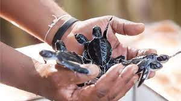

The Kosgoda Turtle Care – Sri Lanka’s Part in Turtle Conservation

The Turtle Care Centre at Kosgoda beach is one of 18 turtle hatcheries along the southern coast of Sri Lanka. The centre is located in the South Western coastal village of Kosgoda and was establised in 1981. It is also very popular as all five species of turtles that visit Sri Lanka nest in Kosgoda. This is not so with many of the other hatcheries around the island whose beaches host only some of the species. The centre functions mainly as a hatchery and makes huge efforts to increase the rate of hatching, and survival of baby turtles in their very initial stages. However the Care centre also works on sick or injured adults; treating them and releasing them back into the ocean. They also run volunteer programs and awareness programs for local and international visitors.
The Hatchery works in the following steps:
- Staff patrols beach at nights looking for mother sea turtles that come out of the sea to lay eggs.
- They protect the mother from afar during the nesting process, until she finishes laying the eggs and returns to the ocean.
- The eggs are relocated from beach to hatchery to protect them from predators and irresponsible human action.
- In addition fishermen are also paid to bring any turtle eggs they find to the hatchery.
- The eggs develop and hatch in a protected area. This may take between 45-60 days.
- The hatched turtles are released into the ocean on the same day if no complications arise. This is to avoid human interference in their lifestyles as much as possible.

Location
The sanctuary is located in the address No 13/A Galle road, Mahapalena, Kosgoda. This is within the easy reach of beach hotels in the southern province such as Cantaloupe Levels. The premises are open from 8.30 am to 6.30pm every day.
What to expect
You may walk around the huge tanks with hatchlings and turtles of various sizes before they are released into the sea. You maybe be able to be part of the turtle release after sunset.
Tyrtle release
This is done every day during twilight. The staff would pick the ones they believe is fit to survive in the natural environment and then placed in small buckets before they are released into the sea. The best place to visit the hatchery is after 6, to catch the release and egg hatching if you are lucky.